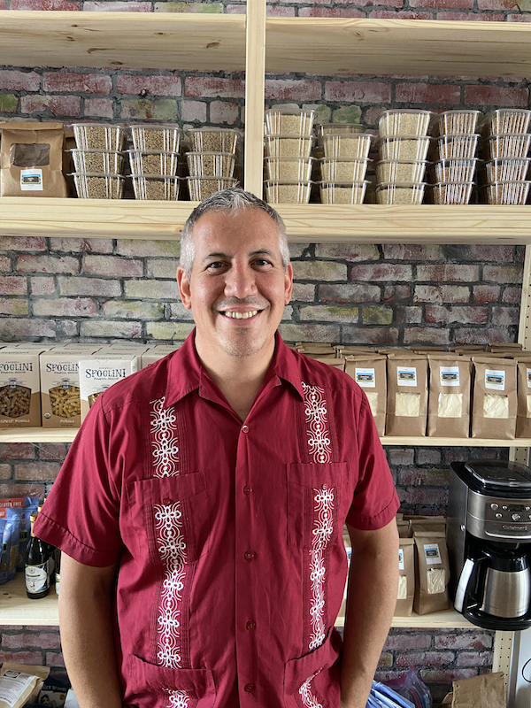

Chris Hewitt
New York State Senate, District 51
A Lifetime of Experience Making Real Change
Catskills, Southern Tier, Mohawk & Hudson Valley Region
BroomeChenangoDelawareOtsegoSchoharieSullivanUlster Counties
I’m an
Ulster County legislator running to be New
York State Senator in District 51 so I can create and enhance laws
that protect working families, strengthen local economies, and
highlight our vibrant communities.
With decades of experience serving the people of New York,
I’ve already secured funding to:
- create zero waste programs
- provide pro bono legal services for immigrants
- promote locally produced goods
- improve county transit services
...and much more.
Once I'm in Albany, I'll work every day to:
- finally pass the NY Health Act to implement universal health care
- support programs and incentives for local business owners
- create energy independence that is green and decentralized
- build affordable housing for working families, seniors and young people
- introduce modern protections for our air and water
I’m the person who can do something about these things. I have
done it and I will continue to do it.
Let's build systems change together!